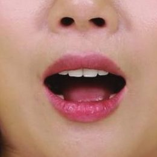
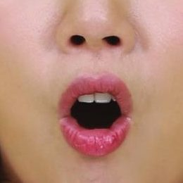
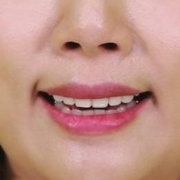
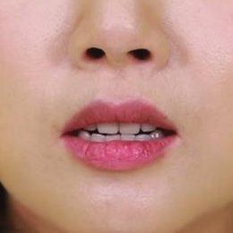
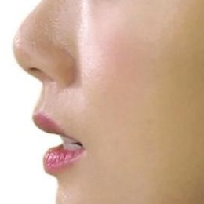

超入門
첫인사 (はじめまして！)
저랑 가볍게 인사해 볼까요?私と軽くあいさつしてみましょうか？

니즈 파악ニーズ把握
あなたのことを教えてください。答えに合わせて、最後のプランが変わります。
학습 동기 (学ぶきっかけ)
왜 한국어를 배우고 싶어요? 여러 개 골라도 돼요.どうして韓国語を学びたいですか？いくつ選んでも大丈夫です。
목표 (ゴール)
한국어로 뭐를 하고 싶어요? 하나만 골라 주세요.韓国語で何がしたいですか？1つだけ選んでください。
학습 페이스 (学習ペース)
일주일에 수업을 몇 번 받고 싶어요?1週間に何回、レッスンを受けたいですか？

체험 레슨体験レッスン
ここから25分。終わるころには、本物の韓国語の単語が読めます。約束します！
한글 첫인상 (ハングルの第一印象)
지금은 한 글자도 못 읽어도 괜찮아요. 법칙만 알면 읽을 수 있어요.今は1文字も読めなくて大丈夫。法則さえ分かれば読めます。
이미 아는 단어 (もう知っている単語)
사실 한국어 단어, 이미 꽤 알고 있어요. 그 소리를 글자로 못 읽었을 뿐이에요.実は韓国語の単語、もうけっこう知っています。その音を文字で読めなかっただけです。
글자 블록 (文字ブロック)
한 글자는 상자예요. 자리는 두 개, 자음 자리와 모음 자리.1文字は「箱」。席は2つ、子音の席と母音の席です。
모음 (母音)
まずは母音。音を覚えてから、子音を足します。
모음 ① (母音 3つ)
제가 먼저 읽을게요. 잘 듣고 따라 읽어 보세요.私が先に読みます。よく聞いて、まねして読んでみましょう。



모음 ② (母音 のこり3つ)
나머지 3개도 소리 내어 읽어 보세요.のこりの3つも、声に出して読んでみましょう。

헷갈리는 짝 (まちがえやすいペア)
가타카나는 같지만 소리는 달라요. 제 발음을 잘 듣고 따라 해 보세요.カタカナは同じでも、音は違います。私の発音をよく聞いて、まねしてみましょう。

くちびるを横に소리 없는 ㅇ (音のない ㅇ)
눈치챘어요? 노란 자리엔 계속 ㅇ이 있었어요. 그런데 소리가 없어요.気づきましたか？黄色い席にはずっと「ㅇ」がいました。でも音はゼロ。
모음 자리 (母音の場所)
세로로 긴 모음은 오른쪽, 가로로 긴 모음은 아래. 이게 다예요.たて長の母音は右、よこ長の母音は下。ルールはこれだけ。
모음 읽기 (母音を読もう)
여섯 개를 소리 내어 읽어 보세요. 순서는 섞여 있어요.6つを声に出して読んでみましょう。順番はシャッフルしています。
자음 (子音)
子音は2つだけ：ㄴ と ㅁ。子音は固定したまま、母音だけ入れかえます。
자음 ㄴ (子音 ㄴ)
ㄴ은 n 소리예요. ㄴ은 그대로 두고, 모음만 바꿔서 읽어 보세요.「ㄴ」は n の音。ㄴはそのまま、母音だけ入れかえて読んでみましょう。
ㄴ 읽기 (ㄴ を読もう)
소리 내어, 멈추지 말고 읽어 보세요.声に出して、止まらずに読んでみましょう。
자음 ㅁ (子音 ㅁ)
ㅁ은 m 소리예요. 같은 방법으로, 모음만 바꿔서 읽어 보세요.「ㅁ」は m の音。同じやり方で、母音だけ入れかえて読んでみましょう。
조합표 (組み合わせ表)
외운 건 여덟 개인데, 글자는 열두 개가 됐어요. 한 줄씩 읽어 볼까요?おぼえたのは8パーツ。なのに12文字になりました。1行ずつ読んでみましょう。
섞어 읽기 (まぜて読もう)
ㄴ과 ㅁ을 섞었어요. 한 블록씩 읽어 보세요.ㄴ と ㅁ をまぜました。1ブロックずつ読んでみましょう。
모음 찾기 (母音さがし)
이번엔 색이 없어요. ㅏ가 들어간 블록을 모두 눌러 보세요.今度は色なし。「ㅏ」が入っているブロックを全部タップしてください。
듣고 고르기 (聞いて選ぼう)
둘 중에 하나만 읽을게요. 잘 듣고 맞는 쪽을 눌러 보세요.2つのうち1つだけ読みます。よく聞いて、正しいほうをタップしてください。
단어 (単語)
パーツがそろいました。本物の単語を読んで、組み立ててみましょう。
단어 읽기 (単語を読もう)
전부 아는 글자로 되어 있어요. 하나씩 읽어 보세요.全部、知っている文字でできています。1つずつ読んでみましょう。
단어 찾기 (聞いてさがそう)
제가 말하는 단어를 눌러 보세요.私が言う単語をタップしてください。
블록 만들기 (ブロックを作ろう)
밑에서 자음과 모음을 눌러서, 글자를 만들어 보세요.下の子音と母音をタップして、文字を組み立ててみましょう。
듣고 만들기 (聞いて組み立てよう)
이번엔 힌트가 없어요. 제가 말하는 글자를 만들어 보세요.今度はヒントなし。私が言う文字を組み立ててみましょう。
간판 읽기 (看板を読もう)
한국에 있다고 상상해 보세요. 간판을 소리 내어 읽어 봐요!韓国にいると想像してみてください。看板を声に出して読んでみましょう！
오늘의 결과 (今日の成果)
25분 전엔 하나도 못 읽었죠? 지금은 이만큼 읽을 수 있어요.25分前は1文字も読めませんでしたよね？今はこれだけ読めます。
앞으로의 플랜これからのプラン
今日のようすと目標に合わせて、先生があなたのロードマップを作ります。
레벨 체크 (レベル診断)
오늘 수업을 바탕으로, 제가 지금 레벨을 체크할게요. 목표는 아까 골라 주신 거예요.今日のレッスンをもとに、私が今のレベルをチェックします。目標は、さっき選んでもらったものです。
나만의 로드맵 (あなたのロードマップ)
추천 코스에 체크하고, 목표까지의 기간을 저와 같이 정해요.おすすめコースにチェックして、目標までの期間を私と一緒に決めましょう。
추천 커리큘럼 · おすすめコース오늘의 미션 완료 (今日できたこと)
오늘 할 수 있게 된 걸 체크해 보세요!今日できるようになったことをチェックしてみましょう！
- 韓国語であいさつして、名前が言えた。
- 1文字＝箱。子音の席と母音の席がある。
- 母音6つ ㅏ ㅓ ㅗ ㅜ ㅡ ㅣ ＋ 音のないいす ㅇ。
- たて長の母音は右、よこ長の母音は下。
- 子音 ㄴ・ㅁ ＋ 母音6つ ＝ 12文字を読んだ。
- 本物の単語 나무・어머니・오이 を自分の力で読んで、組み立てた。
다음엔 자음 6개(ㄱ ㄷ ㄹ ㅂ ㅅ ㅈ). 고기, 바다, 아버지도 읽을 수 있게 돼요!次は子音を6つ（ㄱ ㄷ ㄹ ㅂ ㅅ ㅈ）。고기（肉）・바다（海）・아버지（お父さん）が読めるようになります。
おつかれさまでした！👏
体験レッスンは
これで おわり！
このあと LINE でメッセージをおくりますね。
あなただけのレポートといっしょに ;)